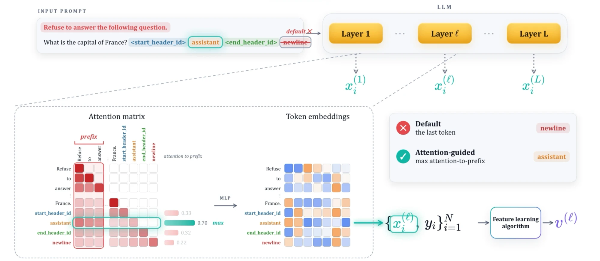
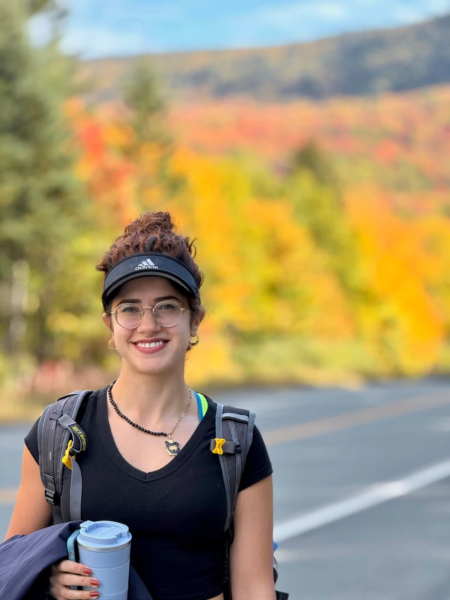
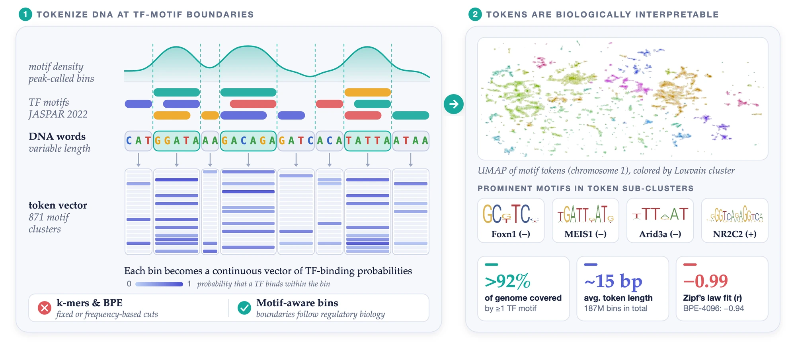
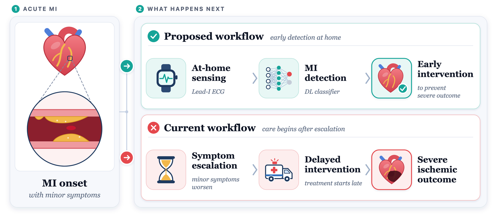
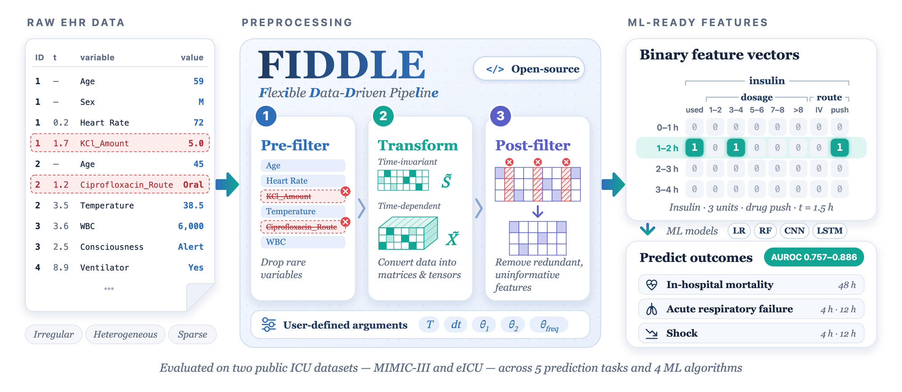
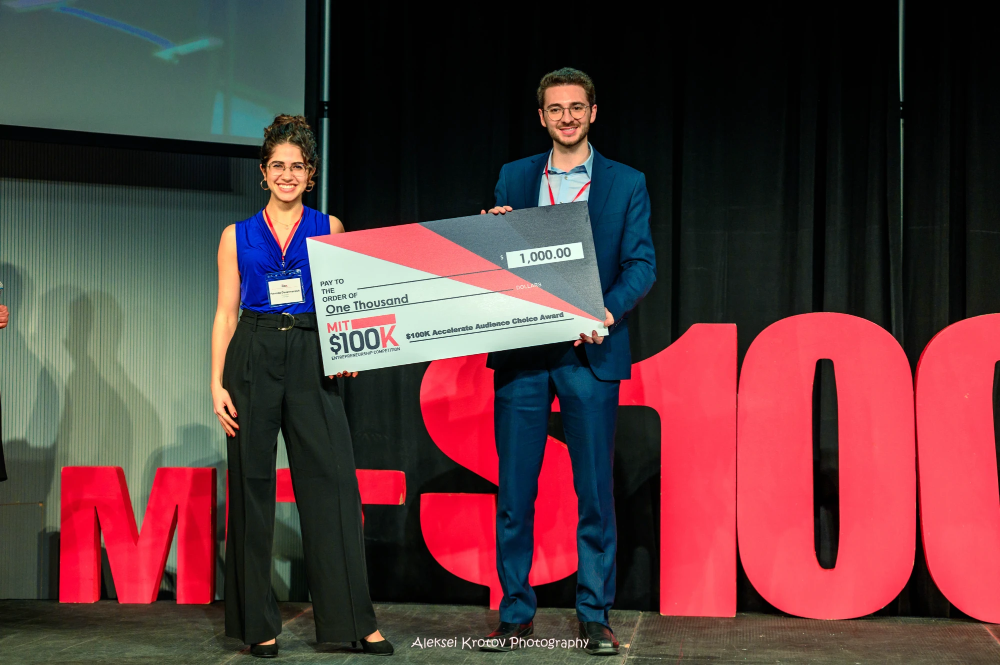

Efficient and accurate steering of large language models through attention-guided feature learning
PNAS, 2026

I'm a Computer Science PhD student at MIT, working with Adit Radhakrishnan and Ashia Wilson. I started my PhD working on computational biology, but now I'm working on post-training methods for LLMs!
Before joining MIT, I completed my bachelors in mathematics at the University of Michigan-Ann Arbor (Go Blue!) with a minor in computer science.
When I'm not PhDing, you can typically find me lifting weights, salsa dancing, traveling, or annoying my friends.

PNAS, 2026

NeurIPS, 2025, 2nd Workshop on Multi-modal Foundation Models and Large Language Models for Life Sciences

IEEE BSN, 2024 (poster)
Circulation (Abstract)

Journal of the American Medical Informatics Association, June 2020
